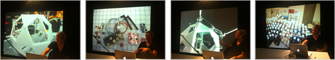

2011
2 Months
The Polymedia Pixel investigates the potential for
computer-augmented architectural materials,
to catalyse responsive and interactive communication between buildings
in a precinct that relates to resource utilisation information. The principle aim is to allow buildings to collect,
analyse and exchange information.
The research in four stages intend to: provide evidence;
develop the Polymedia Pixel as a computer-augmented architectural material;
deploy and evaluate the Polymedia Pixel in an architectural context;
and design and curate building information content.
Using a systematic prototyping and evaluation approach,
the research will provide findings and applications for improved information exchange between
buildings that potentially optimise resource utilisation.


|